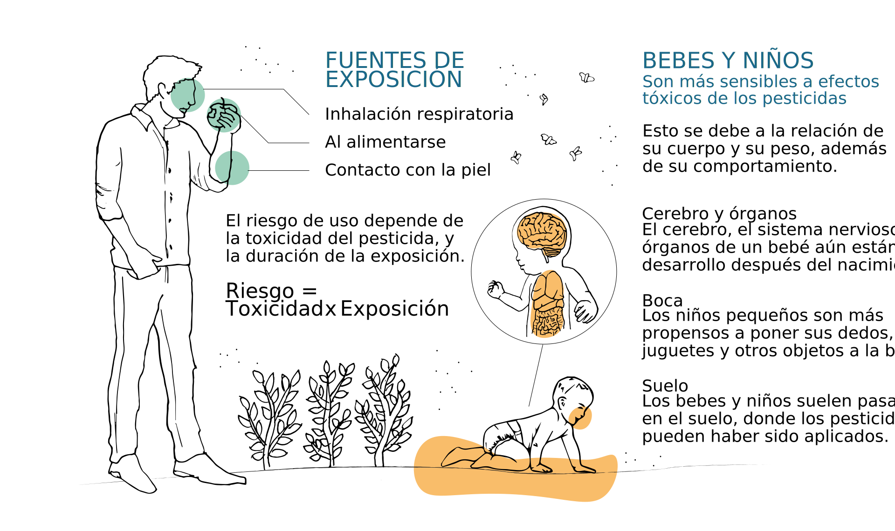
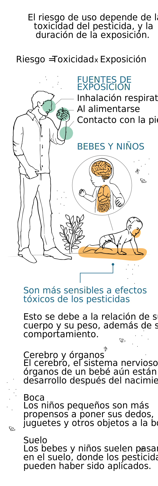

Un pesticida es cualquier sustancia elaborada para controlar diversas plagas y transmisores de enfermedades. Existen muchos tipos para combatir plagas específicas, como el insecticida para insectos.
Los pesticidas se utilizan para controlar diversas plagas y transmisores de enfermedades, como mosquitos, garrapatas, ratas y ratones.
El nitrógeno es un nutriente esencial que todas las plantas requieren para un crecimiento adecuado.
Las malezas son plantas que crecen en forma agresiva, impidiendo el desarrollo normal de otras especies.
El primer estudio que investigó el daño en la salud por exposición a plaguicidas en Chile evaluó los efectos neuropsiquiátricos de la exposición a bromuro de metilo (CH3Br) en trabajadores de empresas exportadoras de frutas y semillas de una zona rural de Santiago. Se halló un aumento de la concentración de CH3Br en sangre, de 13,3mg/dl antes de fumigar a 30mg/dl después de hacerlo.
En 2018. La Dra. Florianos Pancetti junto a un grupo de investigadores, publico un estudio donde se midió la inhibición de unas enzimas presentes en la sangre para determinar la exposición. 1 de cada 4 personas presenta riesgo de intoxicación. Tanto entre los trabajadores agrícolas como la gente que vive en zonas y pueblos rurales alrededor de las plantaciones en la época de fumigación.
Un estudio publicado en el año 2000 estableció una incidencia de malformaciones congénitas en 1/25 recién nacidos vivos en el Hospital de Rancagua, en la Región de O’Higgins.
Pueden tener efectos perjudiciales para la salud, por ejemplo, provocar cáncer o acarrear consecuencias para los sistemas reproductivo, inmunitario o nervioso.
 En Chile existe un [reglamento de pesticidas de uso sanitario y doméstico] (http://bcn.cl/2flkn), esta tiene presente la Constitución en el artículo 32 Nº8. El problema esta en que la fiscalización del uso de fertilizantes y pesticidas es mala.
ONG FIMA ha ido realizando conservatorios hacia una constitución más ecológica a través de su [canal de Youtube] (https://www.youtube.com/c/ONGFIMASantiago/featured), estos son transmitidos en vivo y se encuentran disponibles para reproducción.
El primer estudio que investigó el daño en la salud por exposición a plaguicidas en Chile evaluó los efectos neuropsiquiátricos de la exposición a bromuro de metilo (CH3Br) en trabajadores de empresas exportadoras de frutas y semillas de una zona rural de Santiago. Se halló un aumento de la concentración de CH3Br en sangre, de 13,3mg/dl antes de fumigar a 30mg/dl después de hacerlo.